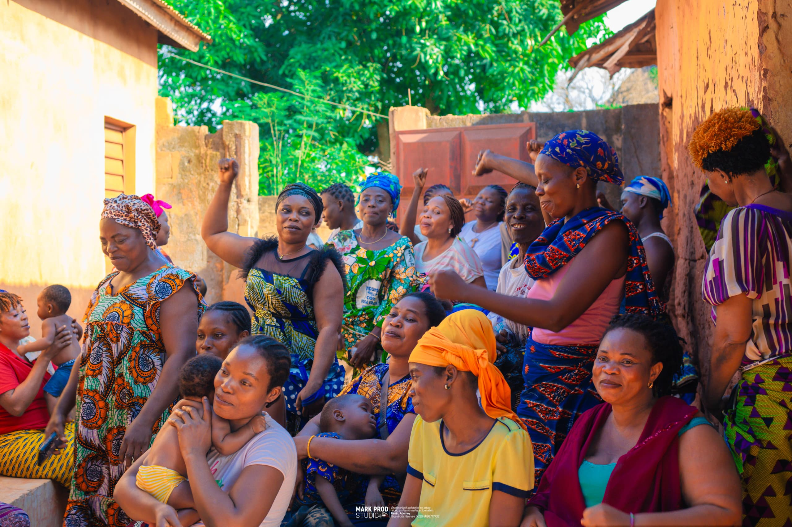

Soutien aux femmes
Nous accompagnons les femmes dans leur développement personnel et professionnel à travers des programmes adaptés à leurs besoins.
Nos actions :
- Ateliers de développement personnel et confiance en soi
- Formations en leadership féminin
- Accompagnement psychosocial et conseil
- Groupes de parole et soutien communautaire
- Sensibilisation aux droits des femmes
- Microcrédits et accompagnement financier
